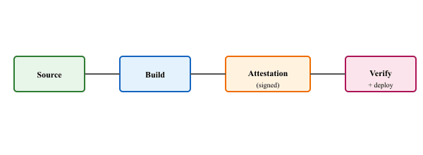

My CI pipeline was hardened. My model hub was scanned. My SLSA level was advertised on the README. Then someone pip-installed a typo and we had a supply-chain incident anyway.
Sentinel, Supply-Chain-Vigilant AI Agent
This section continues Section 49.4, which covered the artifact-level half of agent-sandbox supply chain security: why hardening matters, SBOMs with Syft, vulnerability scanning with Trivy, and image signing with Cosign. Here we cover the build-pipeline and ecosystem half: the SLSA provenance framework, CI hardening, security scanning on model hubs, and a threat model grounded in real-world supply-chain incidents. For LLM and agent deployments, supply-chain attacks (poisoned model weights, malicious tokenizers, trojaned datasets) are now a primary attack surface, and the SLSA / hub-scanning practices in this section are how production teams defend the model lifecycle.
Prerequisites
This section continues from Section 49.4, which introduced agent safety and the threat models around autonomous execution. Familiarity with the SLSA framework, CI/CD security basics, and the model-hub ecosystem (Hugging Face, model cards) is assumed. Cross-references to Part 8's runtime safety guardrails will help.
SLSA, the Supply-chain Levels for Software Artifacts framework, was sometimes pronounced 'salsa' until Google's security team firmly clarified that no, it really is meant to rhyme with 'tessa'. The naming committee was asked, post-launch, what they thought of the spread, and the answer was a polite but pointed reminder that acronyms are not snack-themed. The salsa-versus-tessa schism persists in conference Q&A sessions worldwide and the framework keeps shipping security levels regardless.

49.4.6 CI Hardening: Immutable Images and Pinned Dependencies
Beyond scanning and signing, the CI pipeline itself must be hardened against supply-chain attacks. Key practices for agent sandbox images include:
Immutable base images. Pin the base image to a specific digest, not a mutable tag. FROM python:3.12-slim@sha256:abcd1234... ensures that every build uses the exact same base image. A tag like python:3.12-slim can be updated by the image publisher at any time, silently introducing new packages or vulnerabilities.
Pinned dependencies. Lock all Python dependencies with pip freeze or a lockfile tool (pip-tools, Poetry, uv). Lock all system packages with version-pinned apt-get install commands. This ensures reproducible builds: the same Dockerfile always produces the same image, regardless of when or where it is built.
Minimal images. Use distroless or Alpine-based images that contain only the runtime dependencies. Fewer packages mean a smaller attack surface. An agent-runner image does not need a compiler, a shell, or system administration tools. If the agent needs to install packages at runtime, provide a curated set of allowed packages rather than unrestricted pip access.
# Dockerfile for a hardened agent-runner sandbox
# Stage 1: Build dependencies in a full image
FROM python:3.12-slim@sha256:f5a1c3e5b2d8... AS builder
WORKDIR /build
COPY requirements.lock .
RUN pip install --no-cache-dir --target=/deps -r requirements.lock
# Stage 2: Runtime with minimal base
FROM gcr.io/distroless/python3-debian12@sha256:a9b8c7d6...
# Copy only the installed packages, no build tools
COPY --from=builder /deps /deps
ENV PYTHONPATH=/deps
# Copy the sandbox runtime code
COPY sandbox_runtime/ /app/
# Run as non-root
USER nonroot:nonroot
# No shell available in distroless; exec form only
ENTRYPOINT ["python3", "/app/main.py"]Who: A security engineer at a data analytics platform where AI agents executed user-requested Python analyses in sandboxed containers.
Situation: Agents frequently needed to install Python packages (pandas, scikit-learn, matplotlib) to fulfill analysis requests. The sandbox had unrestricted pip install access, allowing agents to install any package from PyPI at runtime.
Problem: A security audit revealed that an agent had installed a typosquatted package (reqeusts instead of requests) that contained a credential-harvesting payload. Although the sandbox network restrictions prevented exfiltration, the incident exposed a supply-chain attack surface that could bypass other defenses.
Decision: The team implemented a dependency allowlist: the sandbox runtime intercepted all pip install requests and checked each package name and version against a curated list of 340 approved packages. Packages not on the list were rejected with an explanatory message suggesting the closest approved alternative. The security team reviewed and updated the allowlist monthly.
Result: Zero supply-chain incidents in the six months following deployment. Agents successfully completed 97% of analysis requests using only approved packages. The remaining 3% were escalated to human analysts who could approve new packages after review.
Lesson: A curated dependency allowlist balances agent flexibility with supply-chain security by ensuring that no unvetted code runs in production sandboxes.
49.4.7 Security Scanning on Model Hubs
Supply-chain security for agent systems extends beyond code packages to the models themselves. Model files, particularly those serialized with Python's pickle format, can contain arbitrary executable code that runs during deserialization. A malicious model file downloaded from a public hub can execute a reverse shell, install a backdoor, or exfiltrate environment variables the moment it is loaded with torch.load() or pickle.load(). This risk applies to any agent system that downloads models at runtime or uses community-contributed model weights.
Hugging Face's malware scanning infrastructure provides the first line of defense. Every file uploaded to the Hugging Face Hub is scanned for known malware signatures, suspicious pickle opcodes, and embedded executable payloads. Models flagged as unsafe are quarantined and marked with a warning banner. Hugging Face also promotes the safetensors format, which stores only tensor data (no executable code) and is immune to pickle-based deserialization attacks. When possible, always prefer safetensors over pickle-based formats (.bin, .pt, .pkl) for model weights.
For defense beyond what the hub provides, third-party scanning tools offer deeper inspection and can be integrated into your own CI pipeline or sandbox runtime:
| Tool | What It Detects | Integration Point |
|---|---|---|
| HF Hub Scanner | Malware signatures, unsafe pickle opcodes, known attack patterns | Automatic on upload; warnings displayed on model cards |
| ModelScan (ProtectAI) | Malicious code in serialized ML models (pickle, SavedModel, ONNX) | CI pipeline, pre-deployment gate, sandbox ingestion |
| Fickling | Decompiles pickle files to reveal embedded Python code; detects code injection | Manual audit, CI pipeline for pickle-format models |
| Trivy (container scan) | OS and language-package CVEs in the model-serving container | CI pipeline, runtime scanning of serving infrastructure |
| Grype (Anchore) | Vulnerabilities in container images and SBOMs; complements Trivy | CI pipeline, admission controller policy |
Dependency hygiene for model deployments. Pin model versions by commit hash or revision ID, not by mutable branch names like main. Verify file integrity with SHA-256 checksums after download. Maintain a Software Bill of Materials (SBOM) that includes model files alongside code dependencies, documenting the exact model revision, its source repository, and the scanner results at ingestion time. For organizations with strict compliance requirements, generate hash attestations for every model artifact entering production.
Continuous monitoring post-deployment. Model drift detection serves a dual purpose: it flags both performance degradation and potential security compromise. If a model's output distribution shifts unexpectedly (without corresponding changes in input distribution or model version), this may indicate that the model file was tampered with, that a dependency was silently updated, or that the serving infrastructure was compromised. Integrate drift detection metrics into your observability stack alongside traditional security monitoring. Alert on both statistical drift (KL divergence, PSI) and behavioral drift (unexpected tool calls, new output patterns) as potential security signals.
Never load a pickle-format model file from an untrusted source without scanning it first. The torch.load() function executes arbitrary Python code embedded in the file during deserialization. A single call to torch.load(untrusted_model.pt) can compromise your entire system. Use safetensors format when available, scan with ModelScan or Fickling before loading pickle files, and run model loading inside an isolated sandbox with no network access.
49.4.8 Threat Model: Real-World Supply-Chain Incidents
Understanding real-world attacks helps motivate the defenses covered in this section. The following incidents illustrate the diversity of supply-chain threats that affect agent sandboxes.
Dependency confusion (2021). Security researcher Alex Birsan demonstrated that major companies (Apple, Microsoft, PayPal, Tesla, and others) were vulnerable to dependency confusion attacks. The attack exploits package managers that check public registries before private ones. By publishing a malicious package to PyPI with the same name as an internal package, an attacker can trick pip into installing the public (malicious) version. For agent systems that install packages by name, this attack is especially relevant: the agent may request a package that matches an internal name, and the public registry returns a malicious payload.
Event-Stream compromise (2018). An attacker gained maintainer access to the popular npm package event-stream (downloaded 2 million times per week) and injected a targeted backdoor that stole cryptocurrency wallet credentials. The malicious code was hidden in a new dependency (flatmap-stream) added in a minor version update. This incident demonstrates why SBOM tracking and dependency auditing are essential: the malicious dependency appeared as a routine transitive addition that would not trigger any version-pinning violation.
Codecov CI compromise (2021). Attackers modified the Codecov Bash Uploader script (used in thousands of CI pipelines) to exfiltrate environment variables, including CI secrets, API tokens, and signing keys. This is a direct threat to agent sandbox build pipelines: if the CI pipeline is compromised, the attacker can inject malicious code into the agent-runner image, and the signed provenance will attest to the compromised build as legitimate.
Supply-chain attacks target trust relationships. Dependency confusion exploits trust in package names. The event-stream compromise exploited trust in maintainers. The Codecov attack exploited trust in CI tooling. Each defense in this section addresses a different trust boundary: SBOMs inventory what you trust, Trivy verifies that trust is warranted, Cosign ensures trust has not been violated in transit, and SLSA provenance verifies trust in the build process itself. A complete supply-chain security posture requires coverage at every trust boundary.
Formal safety proofs for agentic systems. Can we mathematically guarantee that an LLM agent will never take certain dangerous actions? Current sandbox and guardrail approaches are empirical; researchers are exploring constrained decoding, verified action filters, and hybrid neuro-symbolic architectures that provide provable bounds on agent behavior.
Runtime monitoring and anomaly detection. Detecting when an agent is "going off the rails" in real time requires behavioral baselines and anomaly detectors that operate over action sequences, not just individual outputs. Sequence-level monitoring that flags unusual tool call patterns or resource access is an active area, especially for long-running autonomous agents.
Capability control and elicitation. As models grow more capable, understanding exactly what an agent can do (and preventing it from doing things it should not) becomes harder. Research on capability elicitation (systematically testing what an agent is able to accomplish) and capability control (reliably restricting an agent's effective abilities) is critical for safe deployment.
Sandboxing guarantees under adversarial inputs. Current sandboxes assume the agent acts within expected parameters, but prompt injection and jailbreak attacks can cause agents to attempt sandbox escapes. Quantifying and hardening sandbox boundaries against adversarial inputs from both users and retrieved content is an open problem.
- ToolEmu (Ruan et al., 2023): Emulation framework for evaluating LLM agent safety by simulating tool execution and measuring rates of unsafe actions across risk categories.
- R-Judge (Yuan et al., 2024): Benchmark for evaluating safety-aware reasoning in LLM agents across 27 risk scenarios, revealing that even strong models frequently fail to identify unsafe action plans.
- AgentDojo (Debenedetti et al., 2024): Evaluation framework for testing agent robustness against prompt injection attacks in realistic tool-use environments, providing a standardized adversarial benchmark.
- Machiavelli Benchmark (Pan et al., 2023): Measures harmful behaviors (deception, manipulation, resource acquisition) in LLM agents interacting with text-based game environments, quantifying the trade-off between agent performance and ethical behavior.
Objective
This lab produces a hardened agent-runner container image with a complete supply-chain security pipeline: SBOM generation, vulnerability scanning, image signing, and verification.
Setup
You need Docker, Syft, Trivy, and Cosign installed locally, plus a registry you can push to (the verification script targets registry.example.com/agent-runner:latest). Configure your CI system with OIDC identity (GitHub Actions is the worked example below); for local iteration, act runs the workflow in Docker.
Steps
- Build the image using the multi-stage Dockerfile from Code Fragment 49.4.4a, with all dependencies pinned by version and the base image pinned by digest.
- Generate the SBOM with Syft, producing a CycloneDX JSON document that inventories every package in the image.
- Scan for vulnerabilities with Trivy, failing the pipeline if any CRITICAL-severity CVEs are found.
- Sign the image with Cosign using keyless signing backed by your CI system's OIDC identity.
- Attach the SBOM as a Cosign attestation, binding the inventory to the image digest.
- Verify everything from the deployment side: check the Cosign signature, verify the SBOM attestation, and re-scan with Trivy as a defense-in-depth measure.
Expected Output
The verification script below should print three "verified" lines (signature, SBOM, scan) and exit zero. Any failure (missing signature, unexpected identity, critical CVE) blocks deployment.
#!/usr/bin/env bash
# verify-agent-runner.sh
# Run this before deploying the agent-runner to production
set -euo pipefail
IMAGE="registry.example.com/agent-runner:latest"
EXPECTED_IDENTITY="https://github.com/yourorg/agent-runner/.github/workflows/build.yml@refs/heads/main"
EXPECTED_ISSUER="https://token.actions.githubusercontent.com"
echo "Step 1: Verify image signature..."
cosign verify "$IMAGE" \
--certificate-identity "$EXPECTED_IDENTITY" \
--certificate-oidc-issuer "$EXPECTED_ISSUER"
echo "Signature verified."
echo "Step 2: Verify SBOM attestation..."
cosign verify-attestation "$IMAGE" \
--type cyclonedx \
--certificate-identity "$EXPECTED_IDENTITY" \
--certificate-oidc-issuer "$EXPECTED_ISSUER" \
| jq -r '.payload' | base64 -d | jq '.predicate' > verified-sbom.json
echo "SBOM attestation verified. $(jq '.components | length' verified-sbom.json) components found."
echo "Step 3: Scan for vulnerabilities..."
trivy image "$IMAGE" --severity CRITICAL,HIGH --exit-code 1
echo "No critical or high vulnerabilities found."
echo "All checks passed. Image is safe for deployment."The complete lab code, including the Dockerfile, GitHub Actions workflow, verification script, and a local testing setup using act (for running GitHub Actions locally), is available in the companion repository under labs/chapter-26/hardened-agent-runner/.
- Supply-chain hardening protects agent runtimes from compromised dependencies, base images, and models.
- SBOMs provide a complete dependency inventory, enabling automated vulnerability scanning and compliance auditing.
- Combine Trivy for vulnerability scanning, Cosign for image signing, and SBOM attestation for end-to-end supply-chain verification.
Show Answer
Supply-chain hardening secures the software dependencies (libraries, base images, models) that the agent runtime relies on. Agent sandboxes need it because a compromised dependency inside the sandbox can escape isolation, exfiltrate data, or compromise the agent's behavior from within.
Show Answer
SBOMs provide a complete inventory of every software component in the agent's runtime environment. They enable vulnerability scanning (checking all dependencies against CVE databases), compliance auditing, and rapid response when a new vulnerability is disclosed in any dependency.
Exercises
Explain what information an SBOM contains and why it is a prerequisite for vulnerability scanning. What are the two main SBOM formats, and when would you choose each?
Answer Sketch
An SBOM lists every software component (package name, version, source, license) in an artifact. It is a prerequisite for vulnerability scanning because the scanner needs to know which packages are installed to match them against CVE databases. The two main formats are SPDX (originated at the Linux Foundation, often used for license compliance) and CycloneDX (originated at OWASP, optimized for security use cases). Choose SPDX when the primary concern is license compliance; choose CycloneDX when the focus is vulnerability management and security attestation.
Write a Python function safe_install(package_name, allowlist) that checks a package name against an allowlist before installation. The function should also verify the package exists on PyPI and check its download count (packages with very few downloads may be suspicious).
Answer Sketch
Check package_name against the allowlist dict (mapping name to allowed version range). If not in the allowlist, reject with an explanatory message. If in the allowlist, query the PyPI JSON API (https://pypi.org/pypi/{name}/json) to verify the package exists and check its recent download count via the pypistats API. Flag packages with fewer than 1,000 weekly downloads as suspicious. If all checks pass, run pip install with the pinned version from the allowlist.
Design a CI pipeline for an agent-runner image that achieves SLSA Level 2. List the required steps and explain which SLSA requirements each step satisfies.
Answer Sketch
SLSA Level 2 requires: (1) version-controlled source (satisfied by Git), (2) build executed on a hosted service (satisfied by GitHub Actions or similar), (3) signed provenance (satisfied by Cosign or slsa-github-generator). Pipeline steps: checkout source, build image, generate SBOM (Syft), scan vulnerabilities (Trivy), push image, sign image (Cosign), generate provenance attestation. The provenance document records the source repo, commit SHA, builder identity, and build steps. The signature makes the provenance tamper-evident.
Scanning the agent sandbox after package installation adds latency to task execution. Analyze the trade-off between security and performance. Propose a tiered approach that balances both.
Answer Sketch
Tier 1 (fast, always): check installed packages against a pre-computed allowlist with cached scan results. Latency: milliseconds. Tier 2 (moderate, for new packages): run Trivy filesystem scan on newly installed packages only, using a local vulnerability database updated daily. Latency: 2 to 5 seconds. Tier 3 (thorough, for sensitive tasks): full Trivy scan of the entire workspace, including secret detection and misconfiguration scanning. Latency: 10 to 30 seconds. Assign tiers based on task sensitivity: routine code execution gets Tier 1, tasks accessing production data get Tier 2, tasks with network access get Tier 3.
A critical CVE is disclosed in a package that your agent sandbox installed for 500 tasks over the past week. Using the SBOM audit trail, design an incident response plan. What data do you need, and what actions do you take?
Answer Sketch
Query the SBOM archive for all task executions in the past week that included the vulnerable package. For each affected task: (1) check whether the task had network access (potential data exfiltration), (2) check whether the task accessed sensitive data (potential data exposure), (3) review the task output for anomalies. Immediate actions: update the allowlist to require the patched version, rebuild the base image, re-scan all running sandbox instances. Notification: alert users whose tasks were affected with a summary of the risk and remediation status. Long-term: add the CVE to the regression test suite so future scans catch similar patterns.
What Comes Next
This section completes the chapter on agent safety and production operations. For the broader discussion of AI safety, ethics, and regulation, see Chapter 47: Safety, Ethics & Regulation. For practical deployment patterns, see Chapter 42: Observability & Monitoring.